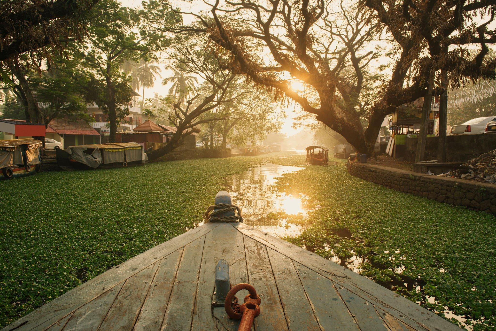

Kerala is one of the smallest states of India. The state stretches along the Malabar coast on the western side of the Indian peninsula, is sandwiched between the hills of the Western Ghats on its eastern edge, the Arabian sea on the western edge and is bordered by the states of Karnataka and Tamil Nadu. God’s own country is a phrase that was first used in the context of Kerala by Vipin Gopal in 1993. Later, the Kerala state tourism development corporation adopted it as the brand for its tourism promotion campaigns. The National Geographic Magazine has named Kerala as one of the ten paradises of the world. Trivandrum (now Thiruvananthapuram) is the capital of Kerala. The city is well known for its Kovalam beach, Sri Padmanabhaswamy temple and various museums and palaces. The highland district, Idukki, with mountains, valleys, dams, forests, wildlife, orchids, streams, scenic points, trekking trails, sanctuaries, hill stations and lakes can be called as God’s own hideaway. Munnar and Wynad, the famous hill stations, can bring one even closer to nature. The climate is equable and varies little from season to season, with temperatures normally ranging from 80 to 90 F in the plains but dropping to about 70 F in the highlands. It gets both south-west and north-east monsoons; and the rainfall is heavy, averaging about 300 cm annually.